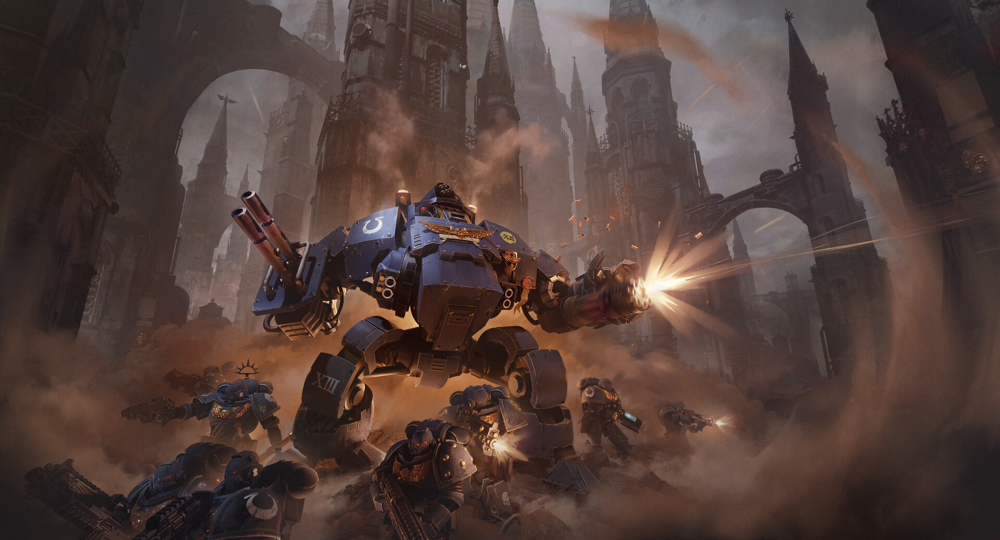

Dreadnoughts
When a Space Marine is wounded beyond even his enhanced body's ability to recover, but his mind and will remain intact, the Chapter can offer him one final rite of service. His shattered body is removed and his remains interred within an armoured sarcophagus wired directly into a walking war-machine called a Dreadnought. He can then keep fighting for centuries, occasionally millennia, waking only for war.

Standard Dreadnought
The common pattern found in most Chapters' armouries. It is a heavily armoured walker carrying a mix of close-combat weapons and heavy guns, piloted by the interred Marine.
Venerable Dreadnought
A Dreadnought that has served for centuries or millennia. Their accumulated combat experience is treated as a strategic asset in its own right, and they're woken only for the Chapter's most critical battles.
Contemptor pattern
An older, more mobile design dating to the Horus Heresy era, prized by some Chapters for its agility compared to later patterns.
Redemptor Dreadnought
A newer, heavier pattern introduced alongside the Primaris Space Marines, built for sustained firepower on the front line rather than pure melee work.
Relic Leviathan Dreadnought
A rare, hulking pattern reserved for a Chapter's most devastating close-quarters engagements, armed with weapons that can tear through vehicle armour.
Among the Chapter's most storied Dreadnoughts is Ancient Bastian Thor, a Venerable Dreadnought whose long service is treated as a living link to the Chapter's past. Each time he is woken for war, it marks a battle the Ultramarines judge worth his experience.